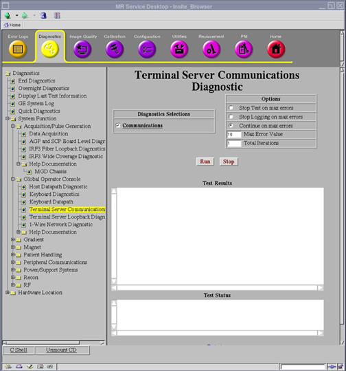
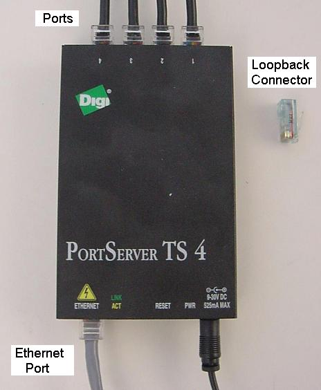

Operating Documentation
Direction 5670006, Rev# 1
Discovery MR750w GEM Service Methods
Module Version 3.0, Version Date 8/19/08
Operating Documentation |
Diagnostics >> System Function >> Global Operator Console >> Terminal Server Communications Diagnostic
Diagnostics >> Hardware Location >> Global Operator Console >> Terminal Server Communications Diagnostic
Illustration 1: Terminal Server Communications

The Terminal Server Communications Diagnostic verifies the terminal server’s related configuration files, processes, and communications.
This diagnostic performs a number of operating system (OS) level checks to verify terminal server communications.
The following aspects of the terminal server can be tested:
Terminal server configuration on the host
Terminal server processes running on the host
Terminal server hardware
Interconnects between the terminal server and the host
The minimum hardware configuration requires the host computer, terminal server, and appropriate interconnects.
Illustration 2: Terminal Server

Select the Communications diagnostic test.
Click the [Run] button.
| NOTE: | The Test Options settings should not be changed from their default settings unless instructed to do so by a GE Healthcare engineer. There are very few circumstances when these settings need to be changed. |
Test Results are clearly indicated by the output produced by this diagnostic test.